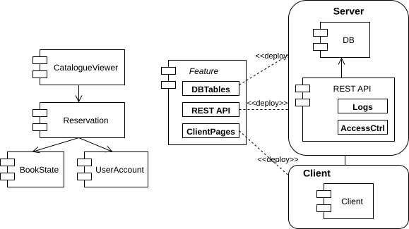
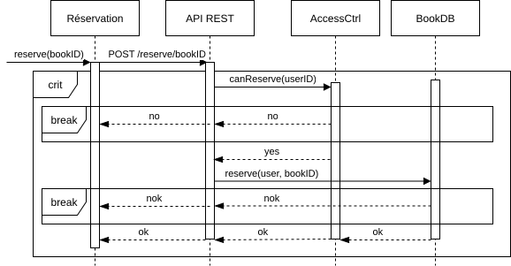

TD2 : Conception (2h)
💡 Nous vous fournissons des bibliothèques de formes UML que vous pouvez importer dans DrawIO.
Déploiement
Vous modéliserez le diagramme de déploiement d'un logiciel de gestion de bibliothèques avec une architecture "éclatée". Vous identifierez les différentes fonctionnalités qu'un tel logiciel devra fournir. À noter que les clients communiqueront avec le serveur via une API REST.
Cliquez pour afficher le corrigé

Note : l'API REST évite que le client ai un accès direct à la BDD SQL et puisse exécuter des requêtes arbitraire pouvant conduire à un DOS du serveur. Cela permet aussi d'ajouter des fonctionnalités supplémentaires comme des logs ou un contrôle d'accès plus fin.
Séquence
Créez le diagramme de séquence d'une réservation.
Cliquez pour afficher le corrigé
